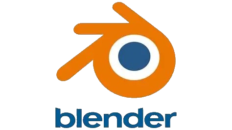
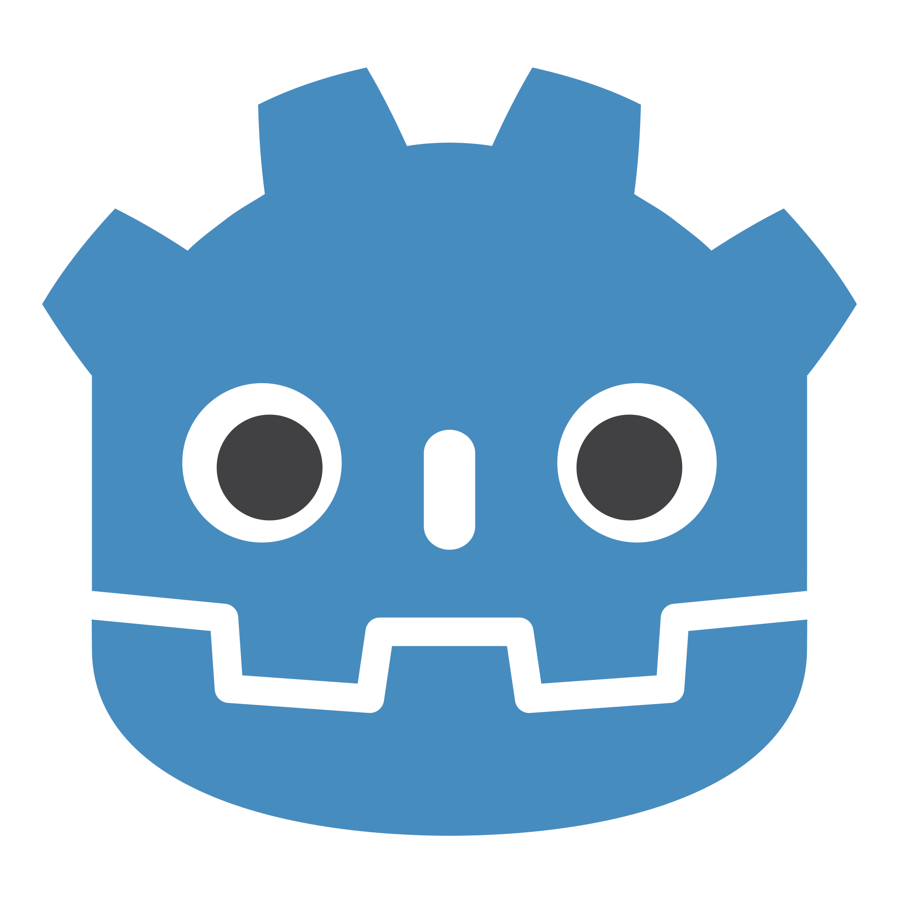
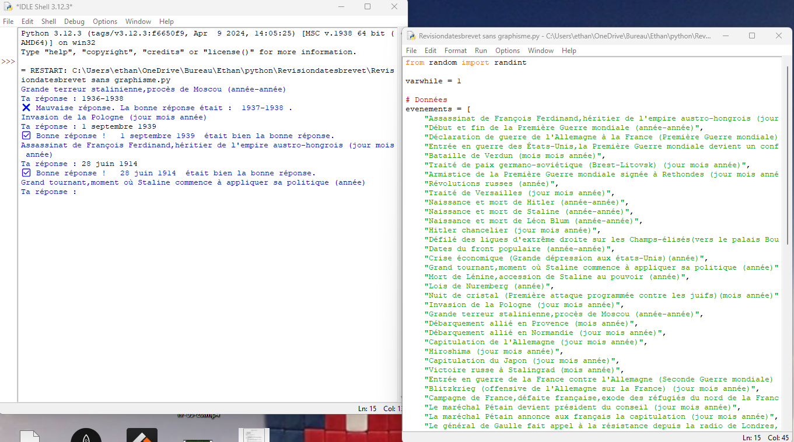

Les logiciels utilisés
Voici les logiciels que j'ai utilisés pour mes projets :
Blender

Blender est un logiciel de modélisation 3D open source très puissant. Il permet de créer des modèles 3D, des animations, des simulations physiques, et même des jeux vidéos avec le plugin Armory 3D. J'ai utilisé Blender pour créer des modèles 3D comme la Gameboy et le stylo que vous pouvez voir dans ma gallerie de projets.

Voici une vue de l'éditeur Blender, avec un projet de pièce cozy cartoon ouvert
Unity

Unity est un moteur de jeu très populaire qui permet de créer des jeux en 2D et en 3D. Il offre une interface très pratique mais un peu difficile à prendre en main et de nombreux outils pour le développement de jeux. J'ai utilisé Unity pour créer des jeux simples comme le jeu avec le labyrinthe ou avec la boule que vous pouvez trouver dans ma gallerie de projets.

Voici une vue de l'éditeur Unity, avec le projet du jeu avec la boule ouvert
Godot Engine

Godot Engine est un moteur de jeu open source qui permet de créer des jeux en 2D et en 3D. Il offre une interface facile à prendre en main et de nombreux outils pour le développement de jeux. J'ai utilisé Godot Engine pour créer un jeu simple, CrazyCube, mais aussi l'application pour réviser la physique-chimie

Voici une vue de l'éditeur Godot, avec le projet CrazyCube ouvert
Idle Python

Idle Python est l'éditeur de base pour créer des programmes python. Mais il existe plein de façon de créer des programmes python, (même avec bloc-note😂), par exemple avec VS code, PyCharm, etc. J'ai utilisé Python pour créer des petits programmes simples et le premier prototype de l'application pour réviser le brevet

Voici une vue de l'éditeur Idle Python, avec le projet de l'application pour réviser le brevet ouvert
| Comment ai-je découvert l'informatique ? | Gallerie de mes projets |
|---|